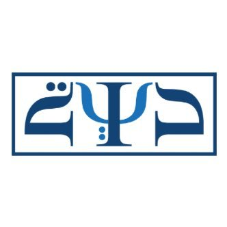
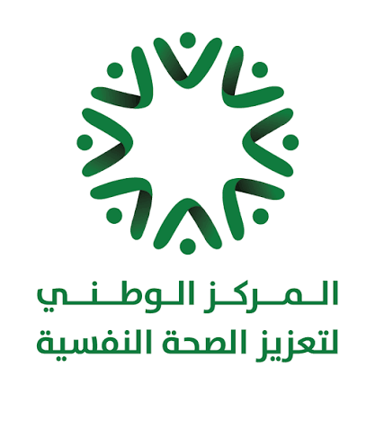

بالتعاون مع

يبدأ ١ أكتوبر ٢٠٢٦ · التسجيل مفتوح


العلاج المعرفي السلوكي
التطبيقات السريرية
برنامج مهني متخصص يمتد ٩ أشهر
بعد النجاح الكبير الذي حققته النسخة السابقة، يسر «رابطة دراية» بالتعاون مع «معهد بيك» و«مورد مساعدة» الإعلان عن فتح باب التسجيل في النسخة الجديدة من البرنامج — تدريب مهني متكامل يجمع بين المعرفة العلمية والتطبيقات الإكلينيكية العملية، بترجمة فورية إلى العربية.